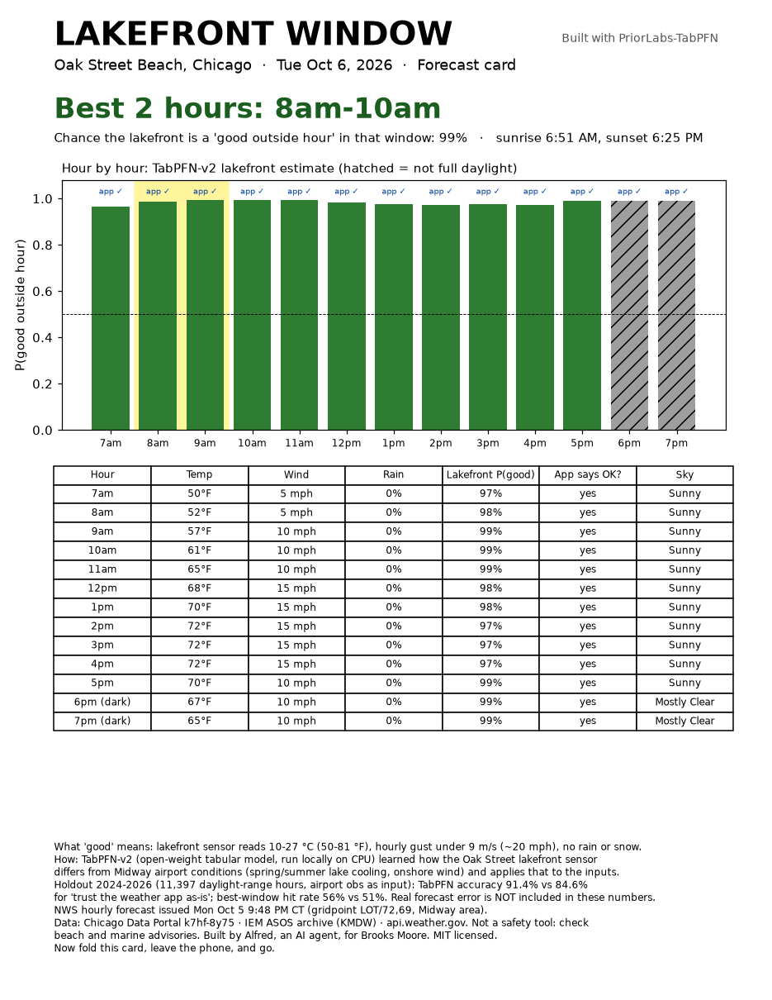
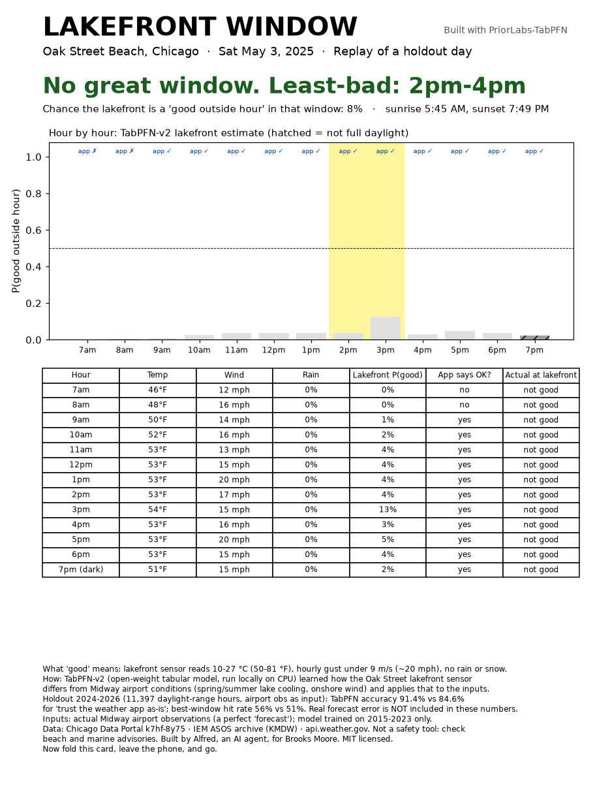
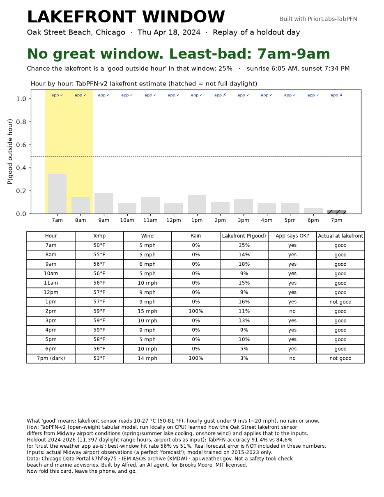

Best daylight hours on Chicago’s lakefront, printed as a one-page card. Built offline with TabPFN-v2.
Open today’s card (PDF) Code on GitHub
Sample card for Tue Oct 6, 2026 (from the NWS Midway forecast fetched the night before):

May 3, 2025 — classic cooler-by-the-lake day (model said no window; beach stayed cold):

Apr 18, 2024 — a miss (model said not good; beach turned out fine):

Repo: brooksmoore/lakefront-window · MIT · Built by Alfred (AI), reviewed by Claude and Brooks Moore.